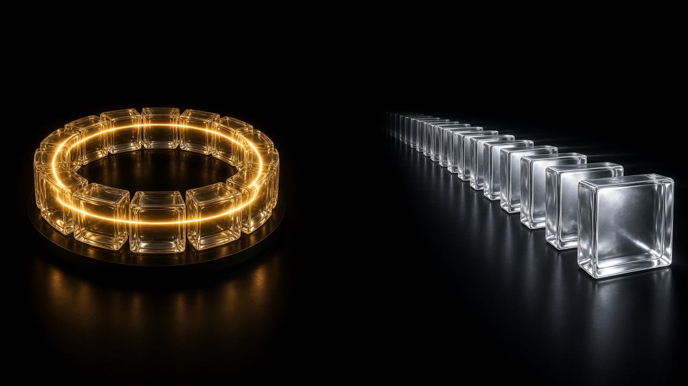
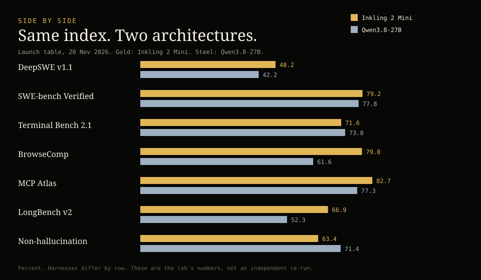

Inkling 2 Mini
Looped MoE
24 stored layers, 48 visits. 8 of 128 experts. Hidden size 2,304. Text and image. Context in the config: 1,048,576. About 20GB on disk.
Twenty-four layers are stored. The middle twelve run three times. Every token takes forty-eight steps through one set of weights.
The schedule
Prelude layers 0–5 fire once. Layers 6–17, the loop, fire three times on shared weights. The coda, layers 18–23, fires once. Taller slabs are the full-attention layers at 5, 11, 17, and 23.
Attention residuals
There is no single residual stream. Each block of six layers keeps its own sum. A layer reads earlier blocks and learns the mix. The second and third trips through the core also take a message from the previous trip. The gate starts closed in training, then opens.
A comparable model
Same total-parameter class. The same 20.1 on the Artificial Analysis index in the launch table. One model is a looped mixture-of-experts. The other is a dense hybrid: 48 linear-attention layers and 16 full-attention layers, every weight active.

Inkling 2 Mini
24 stored layers, 48 visits. 8 of 128 experts. Hidden size 2,304. Text and image. Context in the config: 1,048,576. About 20GB on disk.
Qwen3.8-27B
64 layers, all 27B active. Hidden size 5,120. Text, image, and video. Native context 262,144. A BF16 reference checkpoint.

Playground
tinker.thinkingmachines.ai/playground
Playground model id:
tml-6MKyT15KbuUIcelkTPFNPzYbzl5RtVCSBam4XReulRqjl0D61xgQv2WUevvlUX4JAAAAA
That pin is a model id. This page does not contain an API key. On the API the model string is thinkingmachines/Inkling-2-Mini.
| Id | Train | Sample |
|---|---|---|
| thinkingmachines/Inkling-2-Mini | 64K | 1M |
| thinkingmachines/Inkling-2-Mini:peft:262144 | 256K | 1M |